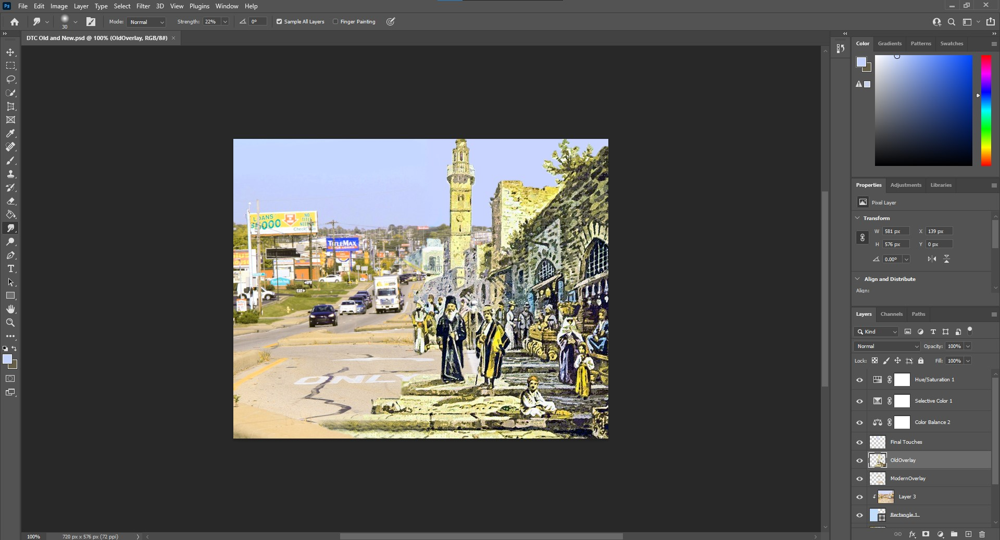

For my piece, I choose to make something inspired by the work of Alexey Kondakov, who superimposes old figures into a modern urban environment. I wanted to focus more on the contrast in two urban environments however, juxtaposing an old city and a modern one. As you can see, the right side of the piece depicts a modern city, and it is largely dominated by the road, cars, and advertisements. The left side, however, is full of people buying and selling, walking around, or even just sitting and enjoying the environment. What I wanted to highlight in particular was how removed we have become from our own environment, as we have designed our cities for cars rather than people.
One principle I worked on incorporating in particular was that of Movement, how the eye scans the work. I wanted to have the older side stand out a bit more by making it closer, and take up more of its side of the screen, which attracts the viewer's attention immediately. Then the top of the buildings and the stone steps act as a funnel to move the eye to the center of the picture, then following the busy middle to the stores on the right. The last thing the viewer should see is the large blank areas in the top and bottom of the right side, contrasting with all the busyness around it, which should hopefully highlight how much is lost with our modern city design. This leads the viewer from the old to the new, and helps to emphasize the point I am trying to make with this piece. In addition, while the empty space might make it unbalanced in terms of the weight of objects, I did a lot of work trying to make the colors of the two pieces match, to add some harmony between the two sides.
Here is an image of the open photoshop project:
The two images I used in this piece, and links to them are below:
Alawi, Munir. Jerusalem Old City Street. 2016. fineartamerican, https://fineartamerica.com/featured/jerusalem-old-city-street-munir-alawi.html
Unknown, StrongTowns, https://images.squarespace-cdn.com/content/53dd6676e4b0fedfbc26ea91/1519937324981-77MBM7RN4HDJ8N0MMZA3/7stroad+with+walking+person.jpg?content-type=image%2Fjpeg